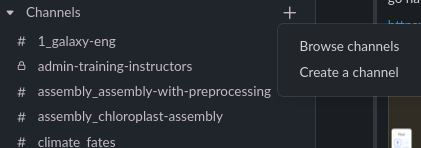
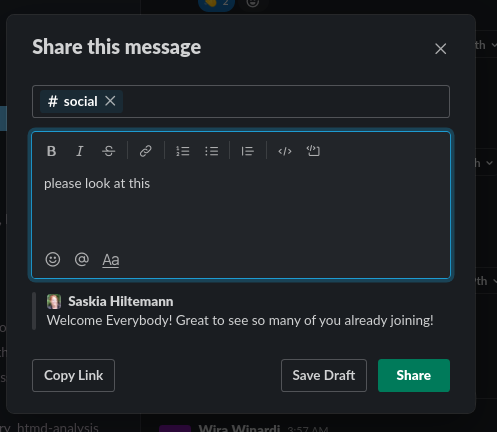

The Slack platform for Support
We will be using Slack as our main communication and support channel. This is where
participants can ask all their questions about the tutorials, about the science,
about Galaxy, about anything really.
See the official Slack help center for an in-depth guide to Slack.
Below we list the most important Slack tips & tricks in the context of GTN training.
- Please join GTN Slack via this invite link
- If your country blocks Slack, please ask your questions on our GTN Gitter channel
- Also can’t join Gitter? Contact the event organizer via e-mail (see event page)
During the event, we will use the following channels:
- Tutorial channels
- Each tutorial has a dedicated channel. You will find the link to this channel below the tutorial video.
- Event channel
- Most events will have a dedicated channel for participants and instructors of that event
- This channel will start wih #event_
- Any questions specific to the event should go here
- Other channels
- #announcements: Only instructors can post here; keep an eye on this channel for important announcements.
- #social: introduce yourself, chat with each other, socialize, have fun!
- #general: any general questions about the GTN, Galaxy, Slack, etc can go here
- #random: for anything off-topic.
- Here you can promote your projects, post job openings, and anything else you think might be of interest to people here, but is not related to training.
- These kinds of of-topic posts will be removed from other channels
If you want to see the list of all channels, click the + icon behind Channels on the left menu

You may end up having a long channel list. You can star your favorite channels to have them shown first
- Right-click on a channel name
- Select “Star channel”
- The channel will now show up in a special section at the top of the left menu

To keep things as organized as possible, please use the reply in thread option when responding to messages from others.
- Hover over the message you want to reply to
- A menu pops up at the top right of the message
- Click the “Speech bubble” icon to reply in thread
- You can also react with an emoji to a message

This option is mainly useful for instructors.
If you want to share a message to a different channel, to bring it to the attention of the right people, you can do that as follows:
- Hover over the message
- Click on the “Arrow icon” that is labelled Share message
- Choose the channel to share it to (e.g. #instructors) and add your own message

